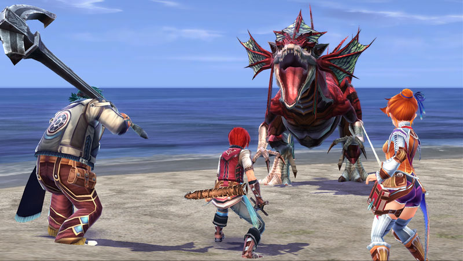
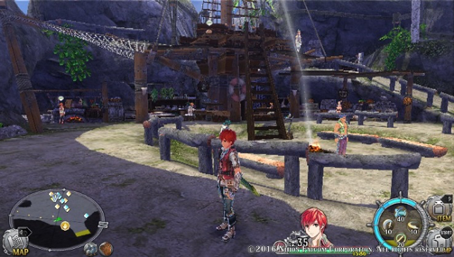
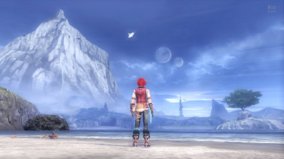
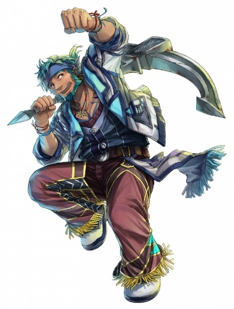

La série des Ys est un peu à l’Action RPG ce que Dragon Quest est au RPG ou Doom au FPS : l’ancêtre vénérable qui, malgré les décennies qui passent, reste fidèle à ses origines. Le studio Falcom fête en effet cette année les trente ans de l’une de ses licences-phare, lancée alors sur PC avant de connaître bon nombre de suites mais surtout un incroyable nombre de portages qui font de la licence la seconde en termes de nombre d’opus derrière Final Fantasy, c’est vous dire ! Après l’épisode Memories of Celceta sorti sur PS Vita en 2012, qui venait réécrire le scénario de Ys IV, et Ys Seven, dernier épisode numéroté de la série, sorti en 2009, il était temps pour les équipes de Falcom de s’atteler à un nouvel opus de la série pour fêter dignement ses trois lustres !
Ys VIII : Lacrimosa of Dana constitue donc le nouvel épisode de la saga, mais sachez que « nouvel épisode » signifie avant tout « nouvelle musique et nouveau monde à explorer » dans la série Ys. Le gameplay et le scénario restent relativement inchangés, mais ce conservatisme est aussi caractéristique d’une série de niche qui vient avant tout satisfaire un public d’amateurs, ce qui ne doit pas pour autant empêcher les novices de s’y essayer.
Il résulte de ces deux éléments simples un gameplay toujours aussi dynamique et plaisant que dans les opus précédents, en particulier en mode Hard qui requerra un minimum de sens de l’observation et de l’esquive. Last but not least, les combats de boss, magnifiés par des thèmes inspirés, constituent de véritables temps forts de cet opus, avec des adversaires imposants et dont il faudra mémoriser les patterns rapidement si l’on souhaite survivre (en particulier en Hard), d’autant plus que les items de soins sont particulièrement rares.
L’autre gros point fort de la série a toujours résidé dans ses musiques, de très haut niveau pour un aussi petit studio, et boxant aisément avec les RPGs employant les meilleurs compositeurs. La Falcom Sound Team pouvait compter pour cet opus sur Hayato Sonoda et Takahiro Unisuga, qui ont supervisé à eux deux les OSTs des cinq derniers opus de la série, pour composer une bande-son venant dignement fêter les 30 ans de la saga Ys.
On se rend rapidement compte que le contrat est plus que rempli : l’OST de Lacrimosa of Dana parvient à faire encore mieux que celle de Memories of Celceta, avec un quasi sans-faute sur les musiques de donjons (on pense à « Gens d’Armes « et « The Sibylline Road » notamment) ou sur l’opening du jeu, ainsi que sur les morceaux « bonus » non présents in game mais offerts en précommande et faciles à trouver sur le Web. Le seul accroc vient des musiques de dialogue, pour une raison malheureusement indépendante des compositeurs, sur laquelle nous reviendrons plus tard.
Pour ce huitième opus, Ys reste fidèle à son héros de toujours, Adol Christin, fier aventurier à la chevelure rouge, et à son univers inspiré de l’Europe et de l’Afrique de l’Antiquité (d’où le latin dans le titre). Le point de départ de l’histoire est simple et sans chichis, dans la droite lignée des Ys encore une fois : alors qu’il vogue sur l’océan Goethe en direction du pays de Greek, le navire d’Adol est attaqué par un Kraken digne de Pirates des Caraïbes et fait naufrage avec ses passagers. Echoué sur l’île dite des Sirènes, redoutée et évitée par les navigateurs, Adol va tenter de retrouver les différents membres de l’équipage et former un camp pour survivre face à une faune et une flore hostiles.
La principale nouveauté de cet Ys réside dans la part donnée aux dialogues, en forte augmentation par rapport aux précédents opus de la série : ceux-ci se font beaucoup plus fréquents et longs, ce qui pourra importuner les habitués qui souhaitent foncer dans l’action sans se poser davantage de questions. Ces séquences posent aussi problème car les musiques de dialogues n’ont clairement pas été conçues pour durer aussi longtemps, ce qui pourra les rendre parfois répétitives, ce qui est d’autant plus dommage qu’elles ne sont pas mauvaises. Ces conversations sont toutefois l’occasion de mieux connaître le passé des coéquipiers d’Adol, qui se montraient particulièrement avares de paroles dans les précédents épisodes de la série.
La thématique « Robinson Crusoé » de cet opus a aussi un impact direct sur le gameplay avec l’ajout d’un petit aspect gestion du camp de naufragés (qui sert de facto de hub principal du jeu), dont il faudra notamment améliorer les défenses pour pouvoir mieux contrer les attaques de bêtes féroces. Il faudra aussi disposer de suffisamment de bras pour espérer pouvoir ouvrir certains passages obstrués, ce qui forcera donc le joueur à récupérer autant de naufragés que possible, chaque rencontre emmenant avec elle son lot de dialogues. Mais le joueur se trouvera récompensé avec la possibilité de forger des armes, de crafter de nouveaux objets,...
Quant à la storyline du jeu, elle s’enrichit progressivement avec l’apparition du personnage de Dana, qu’Adol n’aperçoit qu’en songe dans un premier temps (autre grand classique de la série des Ys, Adol rêve de ses futures waifus). Celle-ci a été grandement mise à l’honneur dans la promotion du jeu au point de presque faire figure de « Deuxième héros ». Ce n’est pas parfaitement juste, vu qu’elle se greffe assez tardivement à l’équipe d’Adol : elle représente toutefois le fil conducteur du scénario.
Inutile de tourner autour du pot, les jeux Ys ont toujours été (et seront probablement toujours) des jeux moches d’un point de vue purement techniques : aliasing, distance d’affichage faisant le yo-yo, ennemis qui laggent quand on les observe de loin,... Ys VIII reste fidèle à la tradition avec des graphismes qui rappellent davantage la PSP que la PS Vita par moments. Au moins la fluidité, essentielle dans tout A-RPG, est-elle intacte (à l’exception notable du camp de naufragés, où l’on n’a heureusement pas à se battre), ce dont se contenteront les joueurs.
 C'est moche, c'est moche, c'est moche !!nversement, le chara design est (encore une fois) une réussite : les nouveaux personnages sont quasiment tous réussis, avec une patte caractéristique de la série depuis plusieurs épisodes, assez éloigné des coupes de cheveux et habillements fantaisistes que l’on peut retrouver dans d’autres J-RPG. Mention spéciale aux personnages de Sahad, pêcheur âgé d’une quarantaine d’années, Griselda (déjà vue dans Memories of Celceta) ou encore à Adol et Dana. L’île des Sirènes possède aussi un certain charme, avec ses paysages variés et ses pics escarpés, malgré les limitations techniques évoquées ci-dessus.
 C'est beau, c'est beau, c'est beau !!Que dire de ce Lacrimosa of Dana si ce n’est que la Team Falcom a fait ce qu’elle savait le mieux faire pour ce 8ème épisode numéroté de la saga ? Le studio a su enrichir la formule de la série en y ajoutant quelques petits à-côtés (pêche, défense de base) et en insistant davantage sur les dialogues et le scénario, avec quelques maladresses qui pourront être ultérieurement améliorées. Le gros point noir reste comme toujours l’absence tangible d’amélioration des graphismes, même si, encore une fois, ce n’est pas là que réside l’intérêt du jeu, ce qui fait des Ys des jeux extrêmement japonais dans l’esprit. Ys VIII vient donc dignement fêter les 30 ans d’une série qui poursuit discrètement sa route, en espérant que la sortie du jeu sur PS4 lui offrira une exposition supplémentaire.